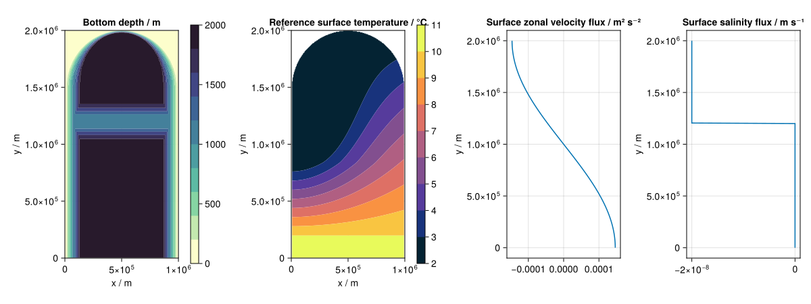

Wind, temperature and salinity forced gyre with basin bathymetry
Model details
This idealized model of the subpolar gyre has surface wind, temperature and salinity forcing and simplified topography with a northern basin separated from a southern open ocean region, based on the model described in Spall (2011) and Spall (2012).

Spall (2011) describes an idealized marginal-sea configuration to represent the circulation which takes place in the subpolar North Atlantic Ocean and Nordic Seas. A northern basin is separated from a southern open-ocean region by a sill with bathymetry as shown in leftmost panel above, with domain spanning 1000 km zonally and 2000 km meridionally. The sea surface temperature is restored to a spatially varying profile, shown in second panel, loosely representing average surface atmospheric temperatures which are cooler in the north and northwest and warmer in the south. Surface wind forcing is applied with a meridionally varying wind stress profile corresponding to zonal velocity flux shown in the third panel panel. A linear equation of state is used with density linearly depending on temperature. The temperature in a sponge region at the south of the domain is restored to give a uniform vertical density gradient (stratification), approximately representing the thermodynamic processes maintaining stratification at lower latitudes. This restoration in the southern sponge region along with inclusion of a convective adjustment turbulence closure scheme enhancing vertical diffusivity for statically unstable conditions and shallow domain depth all contribute to a relatively short time to reach statistical equilibrium of order 50 simulated years from an at-rest initialization.
Spall (2012) adopts the same basic idealized configuration as Spall (2011) but with the addition of a separate salinity representation and freshwater forcing over the northern basin. The equation of state is modified to include a linear dependence on both temperature and salinity. A virtual surface salinity flux representing an influx of freshwater into the northern region is applied over the basin to the north of the sill, with a net evaporation-precipitation flux applied in this northern region, and zero elsewhere, as illustrated in the fourth pane above. In the southern sponge region the salinity is restored to a constant reference value with the same relaxation timescale as the temperature restoration.
Usage example
The below example illustrates setting up and running a simulation of the model with the default parameter values other than a reduced grid dimensionality. The resulting horizontal and depth slices of simulated fields are recorded as an animation using CairoMakie.
using Oceananigans.Units
using GyreInABox
parameters = Spall2011Parameters(grid_size=(50, 100, 25))
configuration = SimulationConfiguration(
simulation_time=60days,
output_filename_stem = "spall_2011_gyre_model",
output_types=(
y_depth_slice_output(; x_or_longitude=500kilometer),
horizontal_slice_output(; depth=0.)
),
progress_message_interval=1000
)
run_simulation(parameters, configuration)
plot_outputs(AnimationPlotOutput(), parameters, configuration)[ Info: Initializing simulation...
┌ Info: Iteration: 0000, time: 0 seconds, Δt: 15 minutes, wall time: 0 seconds
└ max(|u|) = 0.00e+00 m s⁻¹, max(|v|) = 0.00e+00 m s⁻¹, max(|w|) = 0.00e+00 m s⁻¹, max(|S|) = 3.50e+01 10⁻³, max(|T|) = 9.99e+00 °C
[ Info: ... simulation initialization complete (6.650 seconds)
[ Info: Executing initial time step...
[ Info: ... initial time step complete (8.811 seconds).
┌ Info: Iteration: 1000, time: 6.523 days, Δt: 7.210 minutes, wall time: 2.799 minutes
└ max(|u|) = 2.96e+00 m s⁻¹, max(|v|) = 2.66e+00 m s⁻¹, max(|w|) = 2.32e-02 m s⁻¹, max(|S|) = 3.50e+01 10⁻³, max(|T|) = 1.05e+01 °C
┌ Info: Iteration: 2000, time: 13.526 days, Δt: 9.476 minutes, wall time: 5.156 minutes
└ max(|u|) = 2.44e+00 m s⁻¹, max(|v|) = 2.91e+00 m s⁻¹, max(|w|) = 2.06e-02 m s⁻¹, max(|S|) = 3.50e+01 10⁻³, max(|T|) = 1.24e+01 °C
┌ Info: Iteration: 3000, time: 20.667 days, Δt: 8.818 minutes, wall time: 7.528 minutes
└ max(|u|) = 4.05e+00 m s⁻¹, max(|v|) = 2.61e+00 m s⁻¹, max(|w|) = 2.76e-02 m s⁻¹, max(|S|) = 3.50e+01 10⁻³, max(|T|) = 1.24e+01 °C
┌ Info: Iteration: 4000, time: 28.788 days, Δt: 12.504 minutes, wall time: 9.993 minutes
└ max(|u|) = 3.62e+00 m s⁻¹, max(|v|) = 2.40e+00 m s⁻¹, max(|w|) = 1.71e-02 m s⁻¹, max(|S|) = 3.50e+01 10⁻³, max(|T|) = 1.05e+01 °C
┌ Info: Iteration: 5000, time: 37.670 days, Δt: 12.496 minutes, wall time: 12.326 minutes
└ max(|u|) = 2.61e+00 m s⁻¹, max(|v|) = 3.04e+00 m s⁻¹, max(|w|) = 1.29e-02 m s⁻¹, max(|S|) = 3.50e+01 10⁻³, max(|T|) = 1.22e+01 °C
┌ Info: Iteration: 6000, time: 47.789 days, Δt: 16.611 minutes, wall time: 14.740 minutes
└ max(|u|) = 3.45e+00 m s⁻¹, max(|v|) = 2.52e+00 m s⁻¹, max(|w|) = 1.24e-02 m s⁻¹, max(|S|) = 3.50e+01 10⁻³, max(|T|) = 1.25e+01 °C
┌ Info: Iteration: 7000, time: 58.994 days, Δt: 16.226 minutes, wall time: 17.167 minutes
└ max(|u|) = 2.28e+00 m s⁻¹, max(|v|) = 2.58e+00 m s⁻¹, max(|w|) = 1.53e-02 m s⁻¹, max(|S|) = 3.51e+01 10⁻³, max(|T|) = 1.04e+01 °C
[ Info: Simulation is stopping after running for 17.390 minutes.
[ Info: Simulation time 60 days equals or exceeds stop time 60 days.
[ Info: Recording an animation of spatial_slice_at_x_500000.0_of_variables_u_v_w_S_T_at_time_interval_1day to ./spall_2011_gyre_model_spatial_slice_at_x_500000.0_of_variables_u_v_w_S_T_at_time_interval_1day.mp4...
Plotting frame 10 of 61
Plotting frame 20 of 61
Plotting frame 30 of 61
Plotting frame 40 of 61
Plotting frame 50 of 61
Plotting frame 60 of 61
[ Info: Recording an animation of spatial_slice_at_z_0.0_of_variables_u_v_w_S_T_at_time_interval_1day to ./spall_2011_gyre_model_spatial_slice_at_z_0.0_of_variables_u_v_w_S_T_at_time_interval_1day.mp4...
Plotting frame 10 of 61
Plotting frame 20 of 61
Plotting frame 30 of 61
Plotting frame 40 of 61
Plotting frame 50 of 61
Plotting frame 60 of 61